5 Visualizando dados com ggplot2

O ggplot2 é um pacote para visualização de dados criado por Hadley Wickham e parte do tidyverse. O ggplot2 implementa um sistema de gráficos baseados em uma gramática própria que permite a criação de gráficos avançados. Essa gramática se encarrega de diversos detalhes que precisariam ser especificados usando o módulo base do R e organiza um gráfico como a soma de camadas.
A grámatica do ggplot2 pode parecer mais complexa à primeira vista. Porém, após nos familiarizarmos com ela, conseguimos, em poucas linhas, criar gráficos sofisticados, compostos por múltiplas camadas e com excelente qualidade visual. Com ggplot2 é possível combinar elementos e facilmente criar novos gráficos de muitas maneiras customizando sua aparência. Atualmente podemos encontrar mais de 150 pacotes do R que estendem ou implementam funções gráficas do ggplot2. Podemos ver alguns destes pacotes AQUI.
Neste curso faremos uma breve introdução sobre o ggplot2 e seus tipos de gráficos mais comuns. Não cobriremos todas as possibilidades de visualização de dados com o ggplot2, que são muito extensas. Para ssaber mais sobre o ggplot2 e encontrar diversos materiais de referência, clique AQUI.
5.1 Camadas
O ggplot2 segue a lógica da Grammar of Graphics, em que um gráfico é construído pela soma de camadas. Cada camada adiciona uma parte à visualização final — e podemos empilhar quantas camadas quisermos usando o operador +.
Veja o exemplo abaixo utilizando dados de personagens de Star Wars presente no pacote dados:
library(dados)
dados_starwars
# A tibble: 87 × 14
nome altura massa cor_do_cabelo cor_da_pele cor_dos_olhos ano_nascimento sexo_biologico genero planeta_natal especie
<chr> <int> <dbl> <chr> <chr> <chr> <dbl> <chr> <chr> <chr> <chr>
1 Luke Skyw… 172 77 Loiro Branca cla… Azul 19 Macho Mascu… Tatooine Humano
2 C-3PO 167 75 NA Ouro Amarelo 112 Nenhum Mascu… Tatooine Droide
3 R2-D2 96 32 NA Branca, Az… Vermelho 33 Nenhum Mascu… Naboo Droide
4 Darth Vad… 202 136 Nenhum Branca Amarelo 41.9 Macho Mascu… Tatooine Humano
5 Leia Orga… 150 49 Castanho Clara Castanho 19 Fêmea Femin… Alderaan Humano
6 Owen Lars 178 120 Castanho, Ci… Clara Azul 52 Macho Mascu… Tatooine Humano
7 Beru Whit… 165 75 Castanho Clara Azul 47 Fêmea Femin… Tatooine Humano
8 R5-D4 97 32 NA Branca, Ve… Vermelho NA Nenhum Mascu… Tatooine Droide
9 Biggs Dar… 183 84 Preto Clara Castanho 24 Macho Mascu… Tatooine Humano
10 Obi-Wan K… 182 77 Ruivo, Branco Branca cla… Azul acinzen… 57 Macho Mascu… Stewjon Humano
# ℹ 77 more rows
# ℹ 3 more variables: filmes <list>, veiculos <list>, naves_espaciais <list>
# ℹ Use `print(n = ...)` to see more rowsggplot(data = dados_starwars, aes(x = altura, y = massa)) +
geom_point()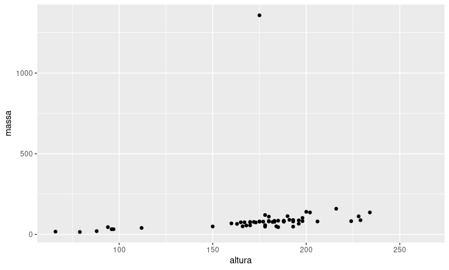
Esse código:
- Especifica o uso do dataset
dados_starwarsemggplot()
- Mapeia a estética em
aes()especificando quais as variáveisalturapara o eixo x emassapara o eixo y
- Soma uma camada com o operador
+
- Usa geom_point() para adicionar pontos ao gráfico.
Esses componentes são os mínimos obrigatórios para gerar qualquer gráfico com o ggplot2: dados, mapeamentos estéticos, operador + e geometria (geom_*()).
Uma vez definido o básico, podemos adicionar camadas para refinar e customizar o gráfico com camadas opcionais:
ggplot(dados_starwars, aes(x = altura, y = massa, color = sexo_biologico)) +
geom_point() +
labs(
title = "Relação entre altura e massa entre personagens de Star Wars",
x = "Altura (cm)",
y = "Massa (kg)"
) +
annotate(
geom = "text",
label = "Jabba the Hutt",
x = 195,
y = 1350
) +
theme_minimal()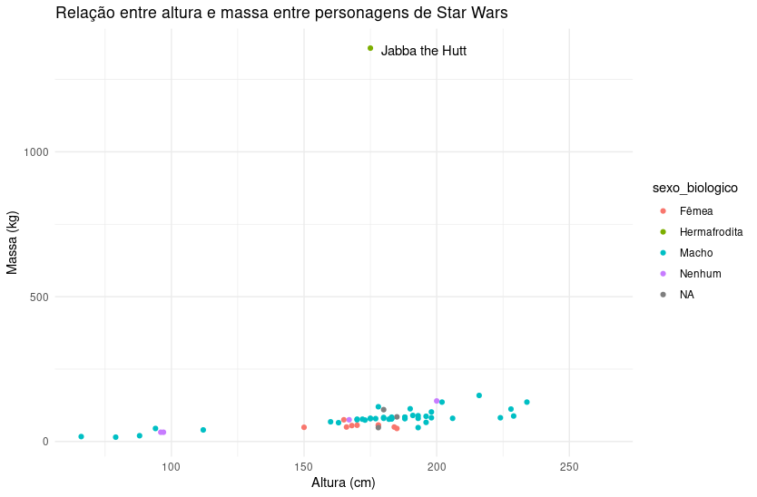
Agora na estética especificamos que as observações sejam coloridas de acordo com o sexo biológico. Além disso, adicionamos título e nome dos eixos x e y dentro do labs() e com anottate() adicionamos uma anotação com o nome do personagem no ponto outlier.
Este é apenas um exemplo! Existem muitas outras possibilidades!
Veja abaixo um resumo dos principais componentes utilizados para criar gráficos no ggplot2:
| Componente (Camada) | Descrição | Funções principais |
|---|---|---|
| Dados | Conjunto de dados que será visualizado. | ggplot(data = ...) |
| Mapeamentos estéticos | Define como variáveis são mapeadas para aspectos visuais (x, y, cor, forma, tamanho). | aes(x = ..., y = ..., color = ..., size = ...) |
| Geometria | Tipo de representação visual a ser usada. | geom_point(), geom_line(), geom_bar(), geom_histogram(), geom_boxplot(), geom_sf() |
| Transformações estatísticas | Calcula estatísticas antes de desenhar (por exemplo, contagens ou regressões). | stat_summary(), stat_smooth(), stat_bin() (muitas geoms já têm stat implícito) |
| Escalas | Controla eixos, cores, tamanhos, formas. Pode mudar intervalos, rótulos e paletas. | scale_x_date(), scale_y_continuos(), scale_color_brewer(), scale_fill_manual() |
| Facetas | Divide o gráfico em múltiplos painéis para comparação. | facet_wrap(~variavel), facet_grid(linhas ~ colunas) |
| Rótulos | Adiciona ou personaliza títulos, subtítulos, legendas. | labs(), ggtitle(), xlab(), ylab() |
| Temas | Ajusta a aparência do gráfico (fonte, fundo, grade, posição da legenda). | theme_minimal(), theme_bw(), theme() |
| Coordenadas | Controla sistema de coordenadas e projeções. | coord_cartesian(), coord_flip(), coord_polar() |
| Anotações | Adiciona textos, formas ou linhas extras ao gráfico. | annotate("text", ...), annotate("segment", ...), geom_hline(), geom_vline() |
5.2 A camada estética aes()
Vamos conhecer um pouco mais as opções disponíveis na camada estética (aes()). Nela, você pode definir diferentes parâmetros:
| Parâmetro | O que controla |
|---|---|
x |
Variável para o eixo x |
y |
Variável para o eixo y |
color ou colour |
Cor da linha, ponto ou contorno, mapeada a uma variável |
fill |
Cor de preenchimento de áreas ou barras, mapeada a uma variável |
size |
Tamanho de pontos proporcional a uma variável |
linewidth |
Espessura de linhas proporcional a uma variável |
shape |
Forma dos pontos, diferenciada por categorias de uma variável |
linetype |
Tipo de linha (contínua, tracejada, pontilhada) de acordo com uma variável |
alpha |
Transparência (0 = invisível, 1 = opaco) mapeada a uma variável numérica |
group |
Agrupa observações para conectar linhas ou desenhar polígonos corretamente |
label |
Texto exibido em geoms que desenham rótulos (geom_text(), geom_label()) |
Alguns desses parâmetros podem ser definidos fora de aes(). Qual a diferença?
Perceba que no exemplo anterior especificamos color = sexo_biologico dentro de aes() para que os pontos fossem coloridos de acordo com essa variável. Dentro de aes() especificamos a estética a partir de variáveis. Fora de aes(), definimos valores fixos.
Vamos voltar ao exemplo de massa vs altura dos personagens de Star Wars e modificar o formato (shape) das observações. Os formatos podem assumir os seguintes valores:
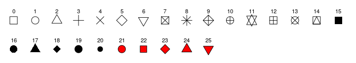
Nota: Para os formatos sólidos de 21 a 25 pode-se definir tanto a cor da linha com color quanto o preenchimento com fill.
Primeiro, vamos pedir que o formato varie de acordo com o sexo biológico:
ggplot(dados_starwars, aes(x = altura,
y = massa,
color = sexo_biologico,
shape = sexo_biologico)) +
geom_point() 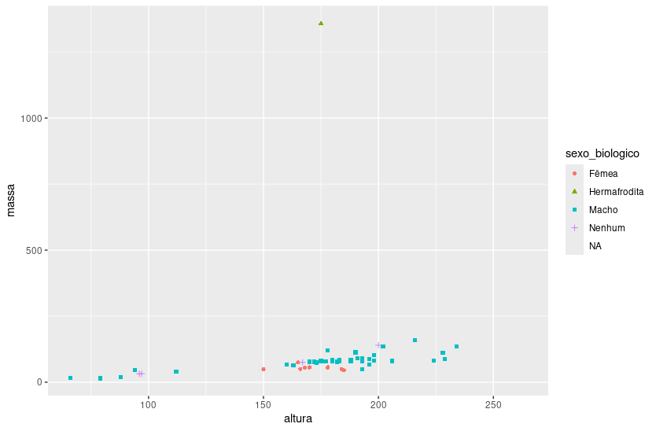
Perceba que automaticamente o ggplot2 cria a legenda combinando os dois parâmetros especificados, cor e formato.
Agora vamos supor que eu queira todos com cor azul. Veja o que acontece se especifico dentro de aes():
ggplot(dados_starwars, aes(x = altura,
y = massa,
color = 'blue',
shape = sexo_biologico)) +
geom_point() 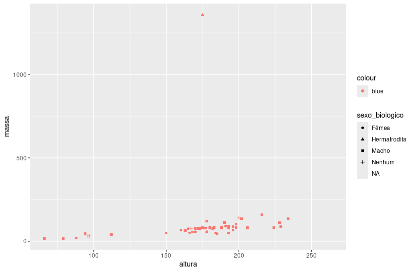
O que aconteceu?
Como corrigimos?
ggplot(dados_starwars,
aes(x = altura,
y = massa,
shape = sexo_biologico),
color = 'blue') +
geom_point() 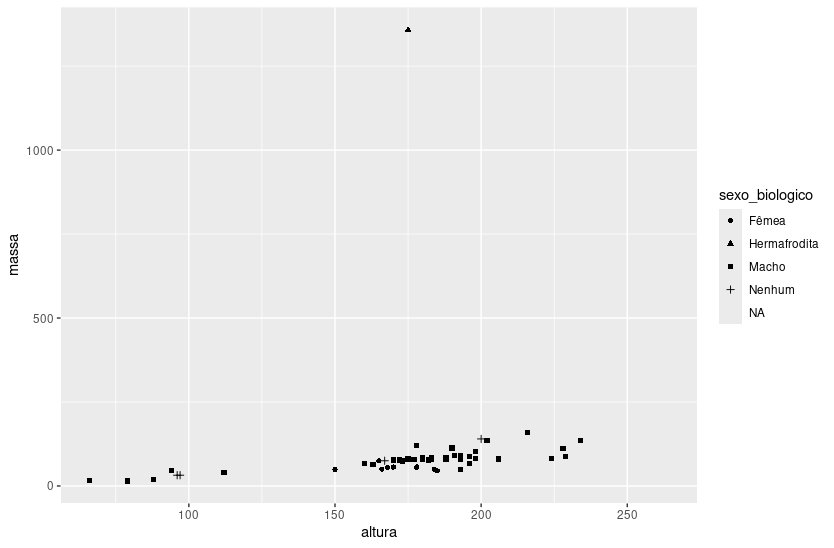
Funcionou?
No ggplot2, quando você define um argumento de estética fora do aes(), ele precisa estar na mesma camada onde você quer aplicar o estilo.
ggplot(dados_starwars, aes(x = altura,
y = massa,
shape = sexo_biologico)) +
geom_point(color = 'blue') 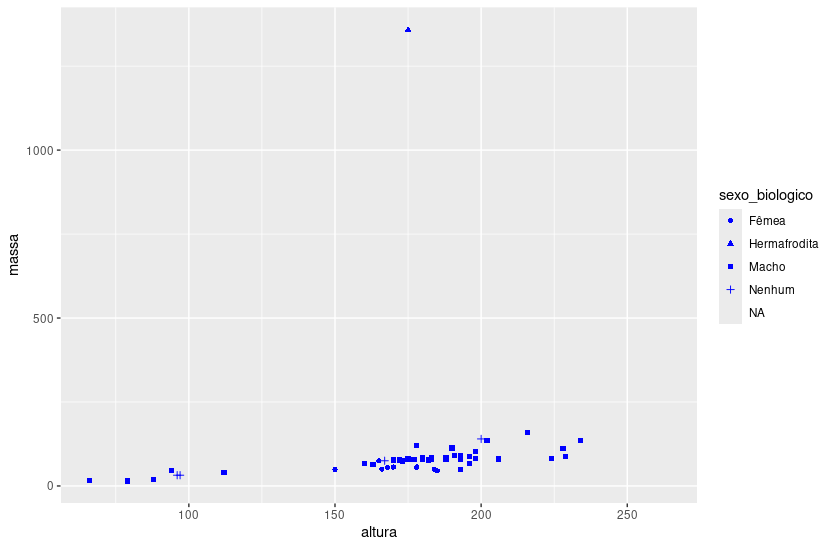
Agora vamos voltar aos dados de AIDS no Brasil. Os dados arrumados e agrupados por UF de residência e ano podem ser baixados aqui:
url <- "https://raw.githubusercontent.com/laispfreitas/curso_CD1/refs/heads/main/aids_uf.csv"
aids.uf <- read_csv(url)
aids.uf
# A tibble: 1,188 × 3
ano cod_UF_res casos
<dbl> <dbl> <dbl>
1 1980 11 0
2 1980 12 0
3 1980 13 0
4 1980 14 0
5 1980 15 0
6 1980 16 0
7 1980 17 0
8 1980 21 0
9 1980 22 0
10 1980 23 0
# ℹ 1,178 more rows
# ℹ Use `print(n = ...)` to see more rowsVamos agora fazer um gráfico com as séries temporais das UFs do Nordeste, variando tanto a cor quanto o tipo de linha.
Os tipos de linha podem ser os seguintes:
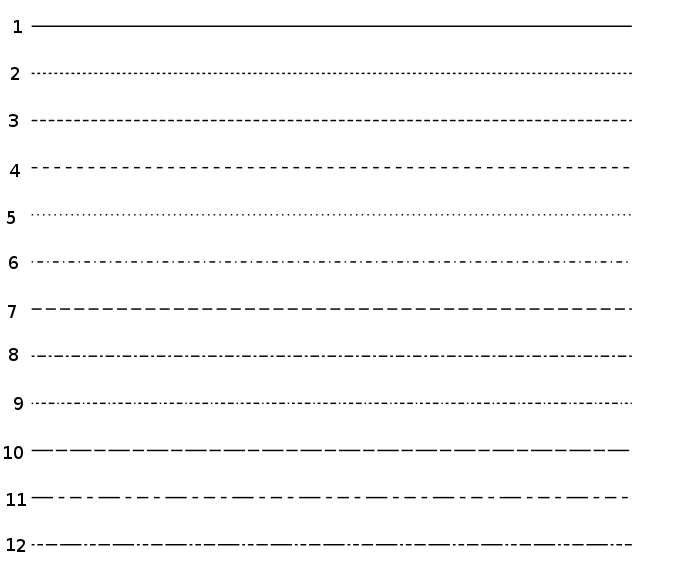
Primeiro precisamos transformar os códigos de UF em fator e selecionar as UFs desejadas:
aids.NE <- aids.uf |>
mutate(cod_UF_res = factor(cod_UF_res)) |>
filter(str_starts(cod_UF_res, "2"))
aids.NE
# A tibble: 396 × 3
ano cod_UF_res casos
<dbl> <fct> <dbl>
1 1980 21 0
2 1980 22 0
3 1980 23 0
4 1980 24 0
5 1980 25 0
6 1980 26 0
7 1980 27 0
8 1980 28 0
9 1980 29 0
10 1982 21 0
# ℹ 386 more rows
# ℹ Use `print(n = ...)` to see more rowsggplot(aids.NE, aes(x = ano,
y = casos,
color = cod_UF_res,
linetype = cod_UF_res)) +
geom_line(linewidth = 1)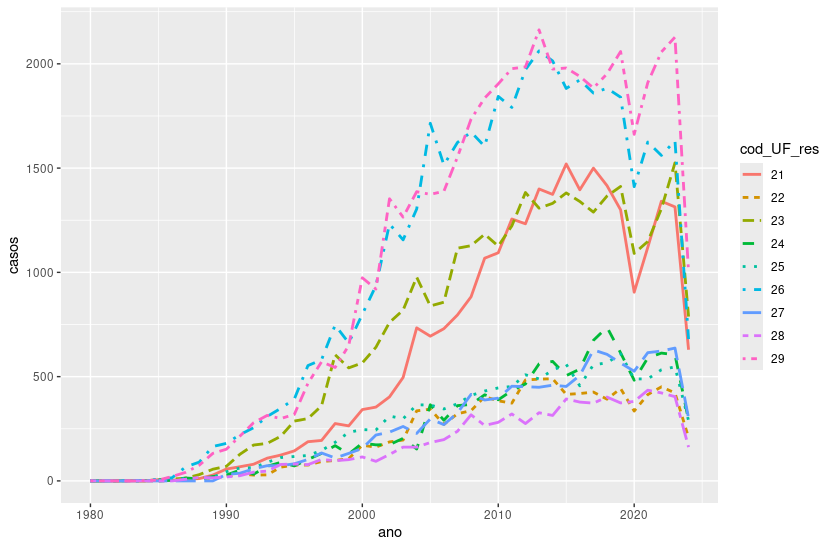
Perceba que adicionamos linewidth = 1 em geom_line() para especificar a espessura da linha.
5.3 Histogramas e densidade
Agora que já vimos a ideia de camadas e conhecemos as opções de mapeamento estético em aes(), vamos fazer um histograma:
ggplot(iris, aes(x = Sepal.Width)) +
geom_histogram()
`stat_bin()` using `bins = 30`. Pick better value with `binwidth`.Repare que retornou uma mensagem de aviso. Podemos especificar a quantidade de classes usando os parâmetros binwidth ou bins. Você deve sempre buscar um valor mais adequado que o padrão (que é de 30 classes).
p <- ggplot(iris, aes(x = Sepal.Width))
p + geom_histogram(binwidth = 0.1)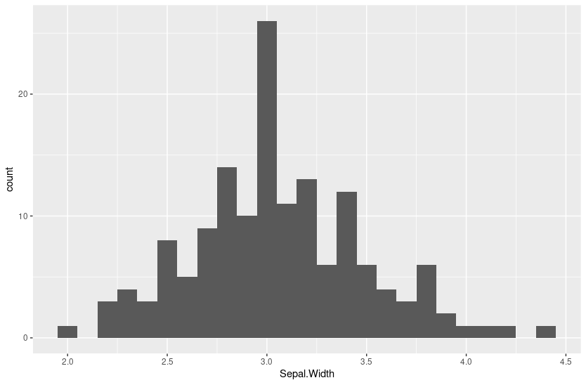
Alterando o número de classes:
p + geom_histogram(bins = 20)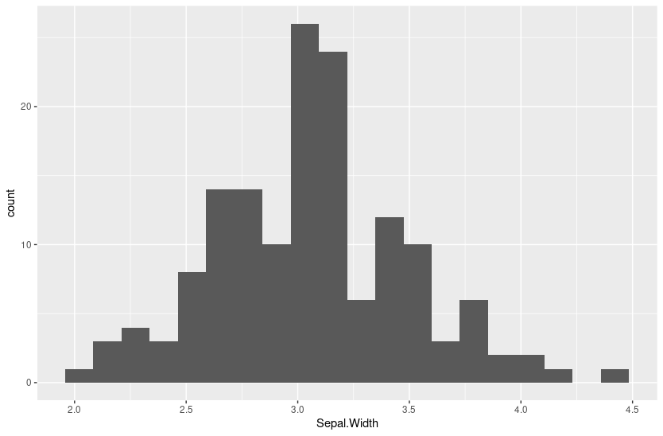
Existe uma fórmula para converter aproximadamente bins em binwidth. Considerando bins = 20:
diff(range(iris$Sepal.Width) / 20)
[1] 0.12Suponha agora que queremos um histograma para cada especie.
ggplot(iris, aes(Sepal.Width, fill = Species)) +
geom_histogram(binwidth = 0.1)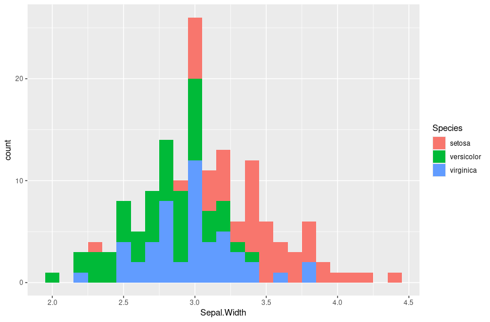
podemos também usar o parâmetro position em geom_histogram() para especificar barras lado a lado ou empilhadas. Teste as opções dodge e fill. A padrão é stack.
ggplot(iris, aes(Sepal.Width, fill = Species)) +
geom_histogram(binwidth = 0.1, position = "dodge")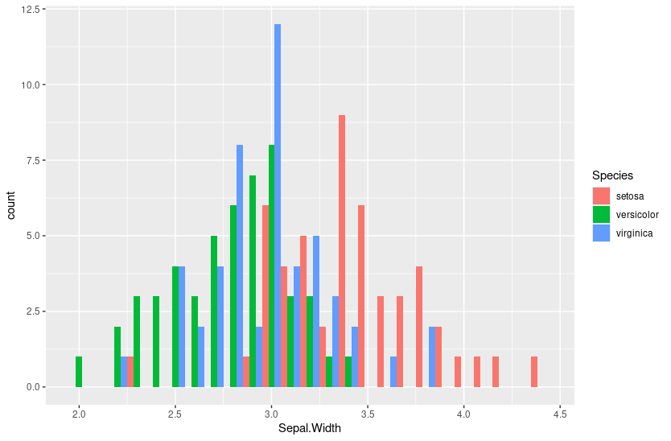
Teste também as opções de coordenadas cord_flip():
ggplot(iris, aes(Sepal.Width, fill = Species)) +
geom_histogram(binwidth = 0.1) +
coord_flip() 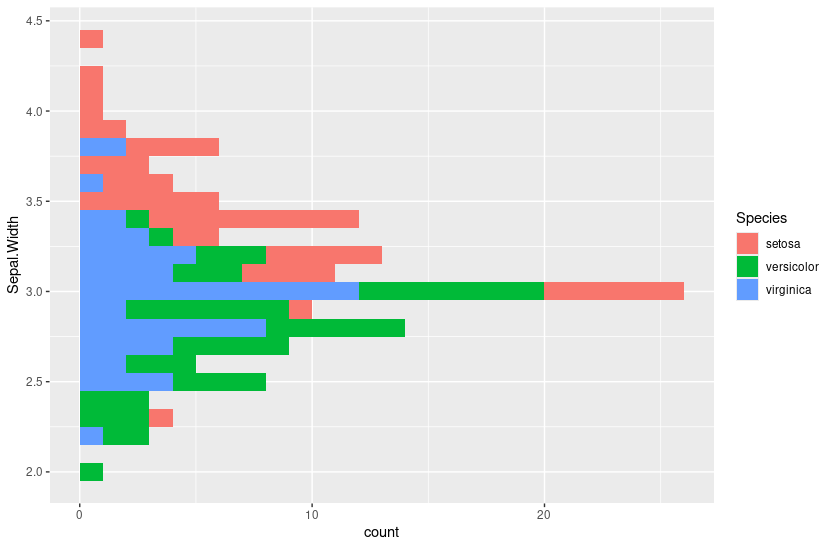
E coord_polar()
ggplot(iris, aes(Sepal.Width, fill = Species)) +
geom_histogram(binwidth = 0.1) +
coord_polar() 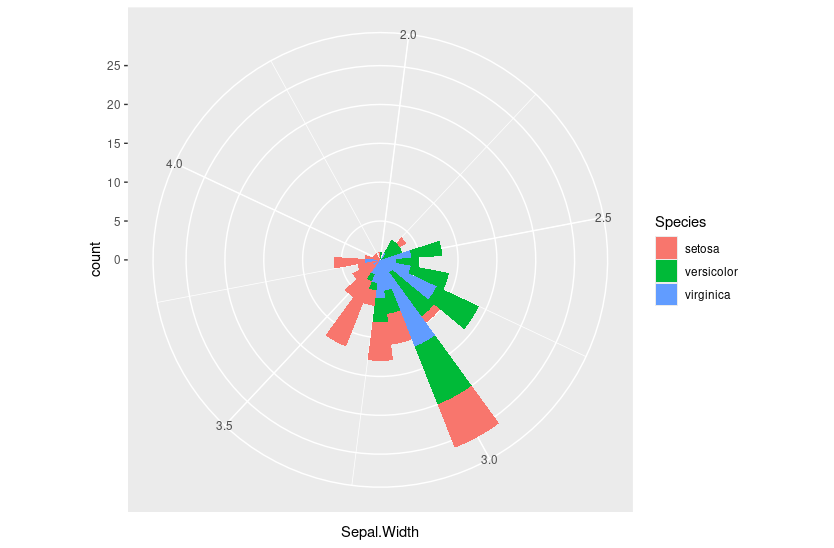
A função geom_density() é semelhante. Vamos testar com o parâmetro alpha:
ggplot(iris, aes(Sepal.Width, fill = Species)) +
geom_density(binwidth = 0.1, alpha = 0.6) 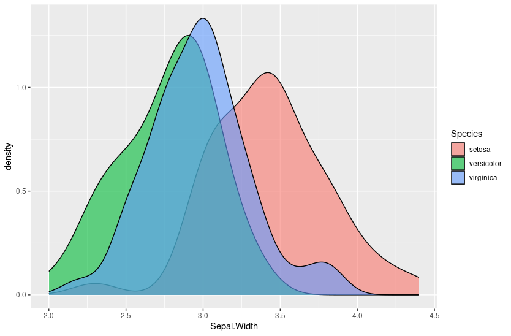